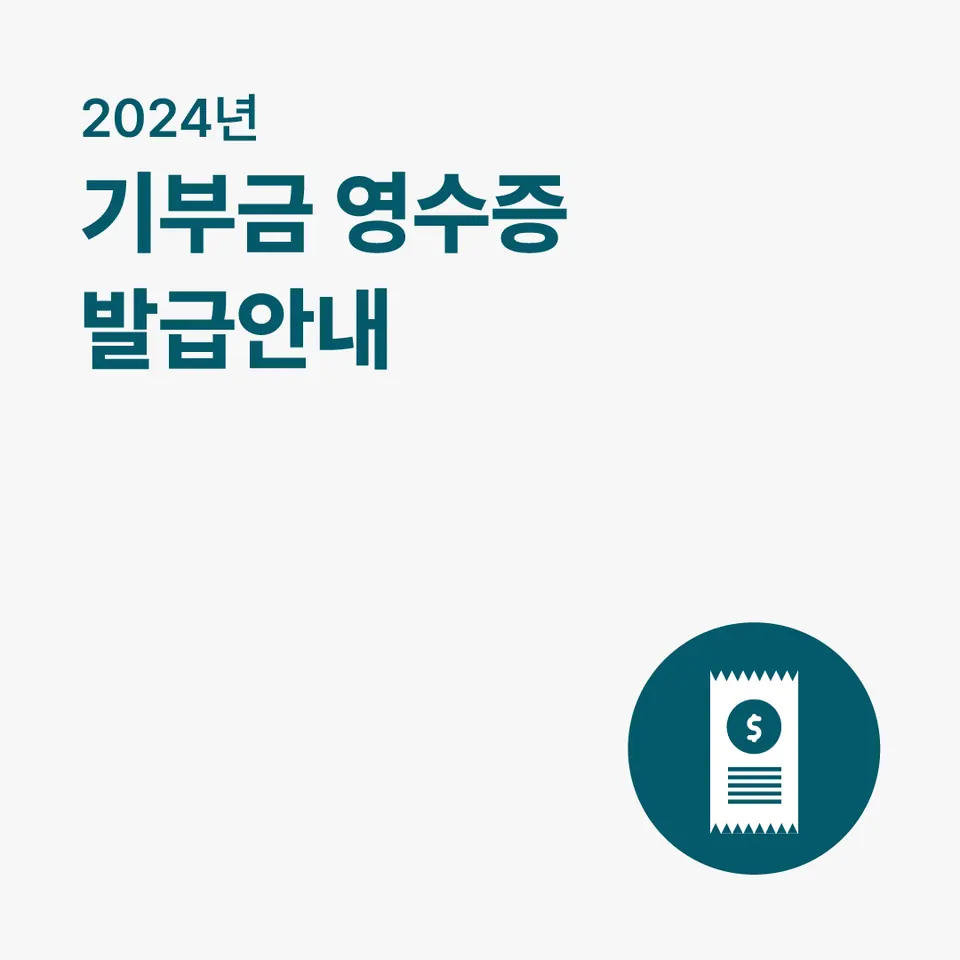

Notices
2024 donation receipt guide


📢❝Here is the guide to issuing 2024 donation receipts❞
Hello, this is WeAct.
Thank you to the supporters who ACTed with the WeAct Foundation in 2024. Thanks to your love and attention, WeAct was able to continue its work to help animals in crisis and abused animals, among other activities, again this year. As the end of 2024 approaches, we will issue donation receipts to WeAct supporters, so please check the following information.
▪️Who can receive a donation receipt
Members and supporters who made monthly or one-time donations between January 1, 2024 and December 31, 2024.
▪️Conditions for issuance
1. By January 5, 2025, please enter your name, 13-digit resident registration number (or 10-digit business registration number for a corporation) and other personal information accurately.
2. Only if you check and enter your personal information by the date given will you be able to see your donation history on the National Tax Service year-end tax settlement website.
*If your member information has changed or has not been entered, please enter and confirm it by the steps below.
▪️How to apply
▫️If you made a monthly/one-time donation through the WeAct website
1. Check and update your personal information on the WeAct website
Go to the login page >> click!
▫️If you donated directly by bank transfer
1. Email hello@weactkorea.org with your name, resident registration number (or 10-digit business registration number), address (including postal code and detailed address), phone number, email address, and a screenshot of your donation history showing your name and the date
▪️When you can print/receive it
⭐️Only for supporters who have registered/submitted their personal information by Sunday, January 5, 2025.
▫️WeAct website: from January 15, 2025 (only for supporters who donated through the website)
Donate > click 'Go' for personal donation history > Print service > Donation receipt
▫️Hometax: from January 15, 2025 (for all supporters)
▪️Other information
1. The WeAct Foundation is a designated donation organization.
Donation code: 40 (designated donation)
2. Donation receipt schedule
- By January 5: check the personal information and donation history of monthly and one-time supporters
- From January 15: available on the Hometax simplified year-end tax settlement service
3. Deductible donors and limits
- Deduction limit: individuals 30% of income / corporations 10% of income
- Deduction rate: 20% up to KRW 10 million / 35% of the amount above KRW 10 million
- Aggregation basis: donations from January 1, 2024 to December 31, 2024
- Range of dependents: the employee can claim an income deduction not only for donations made by a basic-deduction spouse (annual income of KRW 1 million or less) and children (age 20 or younger), but also by a basic-deduction lineal ascendant (aged 60 or older with annual income of KRW 1 million or less) and siblings (aged 20 or younger or 60 or older with annual income of KRW 1 million or less).
4. Inquiries about donation deductions: National Tax Service Call Center ☎ 126
For other questions, please email hello@weactkorea.org and we will reply.
Once again, thank you sincerely for being with WeAct.
THANK YOU FOR ACTING WITH US! 💙